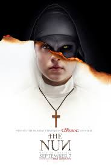
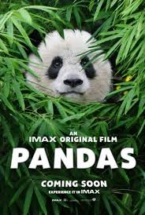
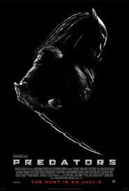
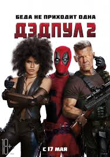
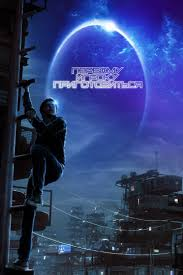

Что если в один прекрасный день в тебя вселяется существо-симбиот, которое наделяет тебя сверхчеловеческими способностями? Вот только Веном — симбиот совсем недобрый, и договориться с ним невозможно. Хотя нужно ли договариваться?.. Ведь в какой-то момент ты понимаешь, что быть плохим вовсе не так уж и плохо. Так даже веселее. В мире и так слишком много супергероев! Мы — Веном!
Когда в уединенном монастыре в Румынии совершает самоубийство молодая монахиня, расследовать происшествие Ватикан отправляет священника с туманным прошлым и послушницу на пороге невозвратных обетов. Рискуя не только жизнями, но и верой, и даже своими душами, они сталкиваются со злобной силой, принявшей облик демонической монахини, а монастырь становится полем ужасающей битвы между живыми и проклятыми.
В китайском парке Чэнду группа учёных занимается сохранением и разведением панд — одних из самых забавных млекопитающих на нашей планете, которые, к сожалению, находятся на грани исчезновения. После положительного опыта учёных из США по адаптации черных медведей к дикой природе, китайские учёные решают применить эту технику для другого вида млекопитающих.
Что если в один прекрасный день в тебя вселяется существо-симбиот, которое наделяет тебя сверхчеловеческими способностями? Вот только Веном — симбиот совсем недобрый, и договориться с ним невозможно. Хотя нужно ли договариваться?.. Ведь в какой-то момент ты понимаешь, что быть плохим вовсе не так уж и плохо. Так даже веселее. В мире и так слишком много супергероев! Мы — Веном!
Единственный и неповторимый болтливый наемник — вернулся! Ещё более масштабный, ещё более разрушительный и даже ещё более голозадый, чем прежде! Когда в его жизнь врывается суперсолдат с убийственной миссией, Дэдпул вынужден задуматься о дружбе, семье и о том, что на самом деле значит быть героем, попутно надирая 50 оттенков задниц. Потому что иногда чтобы делать хорошие вещи, нужно использовать грязные приёмчики.
Действие фильма происходит в 2045 году, мир погружается в хаос и находится на грани коллапса. Люди ищут спасения в игре OASIS — огромной вселенной виртуальной реальности. Ее создатель, гениальный и эксцентричный Джеймс Холлидэй, оставляет уникальное завещание. Все его колоссальное состояние получит игрок, первым обнаруживший цифровое «пасхальное яйцо», которое миллиардер спрятал где-то на просторах OASISа. Запущенный им квест охватывает весь мир.